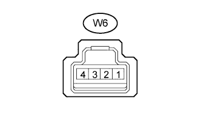

LIN COMMUNICATION SYSTEM > TERMINALS OF ECU |
| CHECK MAIN BODY ECU (MULTIPLEX NETWORK BODY ECU) AND DRIVER SIDE JUNCTION BLOCK ASSEMBLY |

Remove the main body ECU (multiplex network body ECU) from the driver side junction block assembly (Click here).
Measure the resistance and voltage according to the value(s) in the table below.
| Terminal No. (Symbol) | Wiring Color | Terminal Description | Condition | Specified Condition |
| G46-3 (GND2) - Body ground | W-B - Body ground | Ground | Always | Below 1 Ω |
| A-11 (GND1) - Body ground | None - Body ground | Ground | Always | Below 1 Ω |
| A-30 (BECU) - Body ground | None - Body ground | Battery power supply | Always | 11 to 14 V |
| A-32 (IG) - Body ground | None - Body ground | IG power supply | Engine switch on (IG) | 11 to 14 V |
| CHECK MULTIPLEX NETWORK MASTER SWITCH ASSEMBLY |
Disconnect the K3 multiplex network master switch assembly connector.
Measure the resistance and voltage according to the value(s) in the table below.
| Terminal No. (Symbol) | Wiring Color | Terminal Description | Condition | Specified Condition |
| K3-12 (GND) - Body ground | W-B - Body ground | Ground | Always | Below 1 Ω |
| K3-11 (B) - Body ground | L - Body ground | Battery power supply | Always | 11 to 14 V |
| CHECK FRONT POWER WINDOW REGULATOR MOTOR ASSEMBLY LH |
Disconnect the K6 front power window regulator motor assembly LH connector.
Measure the resistance and voltage according to the value(s) in the table below.
| Terminal No. (Symbol) | Wiring Color | Terminal Description | Condition | Specified Condition |
| K6-1 (GND) - Body ground | W-B - Body ground | Ground | Always | Below 1 Ω |
| K6-2 (B) - Body ground | R - Body ground | Battery power supply | Always | 11 to 14 V |
| CHECK FRONT POWER WINDOW REGULATOR MOTOR ASSEMBLY RH |
Disconnect the J6 front power window regulator motor assembly RH connector.
Measure the resistance and voltage according to the value(s) in the table below.
| Terminal No. (Symbol) | Wiring Color | Terminal Description | Condition | Specified Condition |
| J6-1 (GND) - Body ground | W-B - Body ground | Ground | Always | Below 1 Ω |
| J6-2 (B) - Body ground | G - Body ground | Battery power supply | Always | 11 to 14 V |
| CHECK REAR POWER WINDOW REGULATOR MOTOR ASSEMBLY LH |
Disconnect the M4 rear power window regulator motor assembly LH connector.
Measure the resistance and voltage according to the value(s) in the table below.
| Terminal No. (Symbol) | Wiring Color | Terminal Description | Condition | Specified Condition |
| M4-1 (GND) - Body ground | W-B - Body ground | Ground | Always | Below 1 Ω |
| M4-2 (B) - Body ground | W - Body ground | Battery power supply | Always | 11 to 14 V |
| CHECK REAR POWER WINDOW REGULATOR MOTOR ASSEMBLY RH |
Disconnect the L4 rear power window regulator motor assembly RH connector.
Measure the resistance and voltage according to the value(s) in the table below.
| Terminal No. (Symbol) | Wiring Color | Terminal Description | Condition | Specified Condition |
| L4-1 (GND) - Body ground | W-B - Body ground | Ground | Always | Below 1 Ω |
| L4-2 (B) - Body ground | W - Body ground | Battery power supply | Always | 11 to 14 V |
| CHECK SLIDING ROOF DRIVE GEAR SUB-ASSEMBLY |
Disconnect the W2 sliding roof drive gear sub-assembly connector.
Measure the resistance and voltage according to the value(s) in the table below.
| Terminal No. (Symbol) | Wiring Color | Terminal Description | Condition | Specified Condition |
| W2-2 (E) - Body ground | W-B - Body ground | Ground | Always | Below 1 Ω |
| W2-1 (B) - Body ground | W - Body ground | Battery power supply | Always | 11 to 14 V |
| W2-5 (IG) - Body ground | L - Body ground | IG power supply | Engine switch on (IG) | 11 to 14 V |
| CHECK CERTIFICATION ECU |

Disconnect the G26 certification ECU connector.
Measure the resistance and voltage according to the value(s) in the table below.
| Terminal No. (Symbol) | Wiring Color | Terminal Description | Condition | Specified Condition |
| G26-15 (E) - Body ground | W-B - Body ground | Ground | Always | Below 1 Ω |
| G26-1 (+B) - Body ground | V - Body ground | Battery power supply | Always | 11 to 14 V |
| G26-16 (IG) - Body ground | W - Body ground | IG power supply | Engine switch on (IG) | 11 to 14 V |
| CHECK POWER MANAGEMENT CONTROL ECU |
Disconnect the G39 power management control ECU connector.
Measure the resistance and voltage according to the value(s) in the table below.
| Terminal No. (Symbol) | Wiring Color | Terminal Description | Condition | Specified Condition |
| G39-6 (GND) - Body ground | W-B - Body ground | Ground | Always | Below 1 Ω |
| G39-5 (GND2) - Body ground | W-B - Body ground | Ground | Always | Below 1 Ω |
| G39-1 (AM22) - Body ground | B - Body ground | Battery power supply | Always | 11 to 14 V |
| G39-2 (AM21) - Body ground | B - Body ground | Battery power supply | Always | 11 to 14 V |
| CHECK ID CODE BOX |
Disconnect the G25 ID code box connector.
Measure the resistance and voltage according to the value(s) in the table below.
| Terminal No. (Symbol) | Wiring Color | Terminal Description | Condition | Specified Condition |
| G25-8 (GND) - Body ground | W-B - Body ground | Ground | Always | Below 1 Ω |
| G25-1 (+B) - Body ground | V - Body ground | Battery power supply | Always | 11 to 14 V |
| CHECK STEERING LOCK ACTUATOR ASSEMBLY (STEERING LOCK ECU) |
Disconnect the G23 steering lock actuator assembly (steering lock ECU) connector.
Measure the resistance and voltage according to the value(s) in the table below.
| Terminal No. (Symbol) | Wiring Color | Terminal Description | Condition | Specified Condition |
| G23-1 (GND) - Body ground | W-B - Body ground | Ground | Always | Below 1 Ω |
| G23-7 (B) - Body ground | G - Body ground | Battery power supply | Always | 11 to 14 V |
| G23-6 (IG2) - Body ground | W - Body ground | IG power supply | Engine switch on (IG) | 11 to 14 V |
| CHECK AIR CONDITIONING AMPLIFIER ASSEMBLY |
Disconnect the G13 air conditioning amplifier assembly connector.
Measure the resistance and voltage according to the value(s) in the table below.
| Terminal No. (Symbol) | Wiring Color | Terminal Description | Condition | Specified Condition |
| G13-14 (GND) - Body ground | W-B - Body ground | Ground | Always | Below 1 Ω |
| G13-21 (B) - Body ground | V - Body ground | Battery power supply | Always | 11 to 14 V |
| G13-1 (IG+) - Body ground | L - Body ground | IG power supply | Engine switch on (IG) | 11 to 14 V |
| CHECK HEATER CONTROL SWITCH BOARD (w/o Navigation System) |
Disconnect the H32 heater control switch board connector.
Measure the resistance and voltage according to the value(s) in the table below.
| Terminal No. (Symbol) | Wiring Color | Terminal Description | Condition | Specified Condition |
| H32-11 (GND) - Body ground | W-B - Body ground | Ground | Always | Below 1 Ω |
| H32-1 (IG+) - Body ground | L - Body ground | IG power supply | Engine switch on (IG) | 11 to 14 V |
| CHECK NO. 2 AIR CONDITIONING CONTROL ASSEMBLY |
Disconnect the T2 No. 2 air conditioning control assembly connector.
Measure the resistance and voltage according to the value(s) in the table below.
| Terminal No. (Symbol) | Wiring Color | Terminal Description | Condition | Specified Condition |
| T2-8 (E) - Body ground | W-B - Body ground | Ground | Always | Below 1 Ω |
| T2-1 (IG) - Body ground | L - Body ground | IG power supply | Engine switch on (IG) | 11 to 14 V |
| CHECK RAIN SENSOR |
|  |
Disconnect the W6 rain sensor connector.
Measure the resistance and voltage according to the value(s) in the table below.
| Terminal No. (Symbol) | Wiring Color | Terminal Description | Condition | Specified Condition |
| W6-1 (ES) - Body ground | W-B - Body ground | Ground | Always | Below 1 Ω |
| W6-4 (SIG) - Body ground | GR - Body ground | IG power supply | Engine switch on (IG) | 11 to 14 V |
| CHECK WINDSHIELD WIPER SWITCH ASSEMBLY |
Disconnect the G50 windshield wiper switch assembly connector.
Measure the resistance and voltage according to the value(s) in the table below.
| Terminal No. (Symbol) | Wiring Color | Terminal Description | Condition | Specified Condition |
| G50-1 (EW) - Body ground | W-B - Body ground | Ground | Always | Below 1 Ω |
| G50-17 (+B) - Body ground | G - Body ground | Battery power supply | Always | 11 to 14 V |
| G50-3 (WIG) - Body ground | G - Body ground | IG power supply | Engine switch on (IG) | 11 to 14 V |
| CHECK DRIVING SUPPORT SWITCH CONTROL ECU |
 |
Disconnect the G60 driving support switch control ECU connector.
Measure the resistance and voltage according to the value(s) in the table below.
| Terminal No. (Symbol) | Wiring Color | Terminal Description | Condition | Specified Condition |
| G60-16 (GND) - Body ground | W-B - Body ground | Ground | Always | Below 1 Ω |
| G60-6 (+B) - Body ground | L - Body ground | Battery power supply | Always | 11 to 14 V |
| G60-7 (IG) - Body ground | L - Body ground | IG power supply | Engine switch on (IG) | 11 to 14 V |
| CHECK COMBINATION METER ASSEMBLY |
Disconnect the G3 combination meter assembly connector.
Measure the resistance and voltage according to the value(s) in the table below.
| Terminal No. (Symbol) | Wiring Color | Terminal Description | Condition | Specified Condition |
| G3-1 (EP) - Body ground | W-B - Body ground | Ground | Always | Below 1 Ω |
| G3-25 (B) - Body ground | L - Body ground | Battery power supply | Always | 11 to 14 V |
| G3-27 (IG+) - Body ground | R - Body ground | IG power supply | Engine switch on (IG) | 11 to 14 V |
| CHECK ACCESSORY METER ASSEMBLY (w/o Navigation System) |

Disconnect the H26 accessory meter assembly connector.
Measure the resistance and voltage according to the value(s) in the table below.
| Terminal No. (Symbol) | Wiring Color | Terminal Description | Condition | Specified Condition |
| H26-16 (GND) - Body ground | BR - Body ground | Ground | Always | Below 1 Ω |
| H26-1 (IG) - Body ground | L - Body ground | IG power supply | Engine switch on (IG) | 11 to 14 V |
| H26-9 (+B) - Body ground | L - Body ground | Battery power supply | Always | 11 to 14 V |